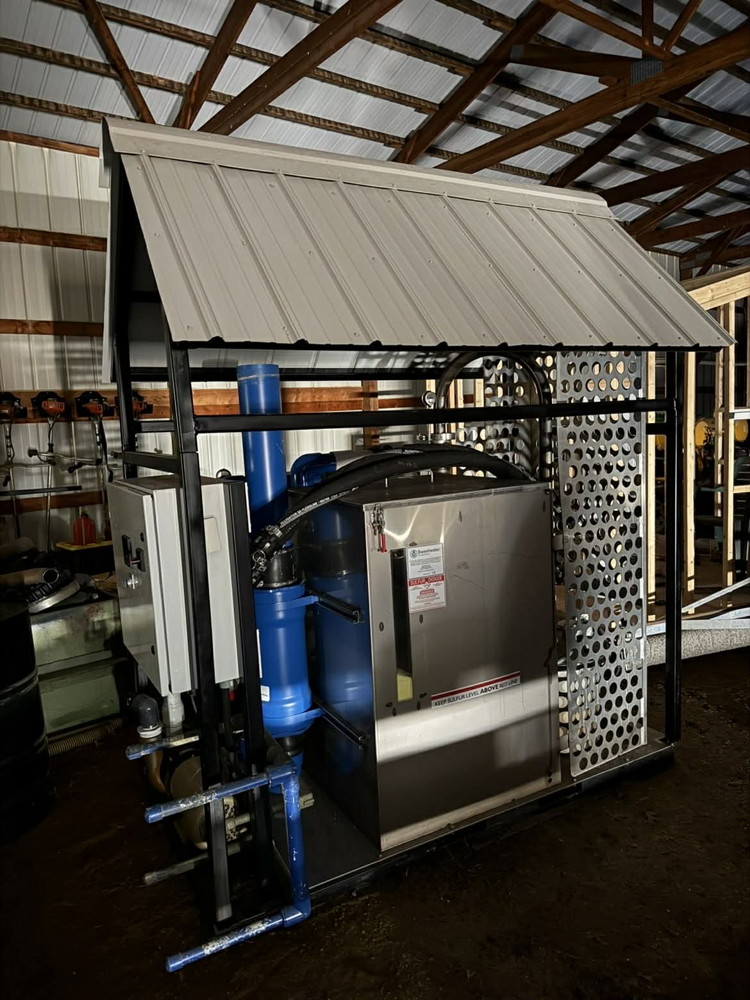
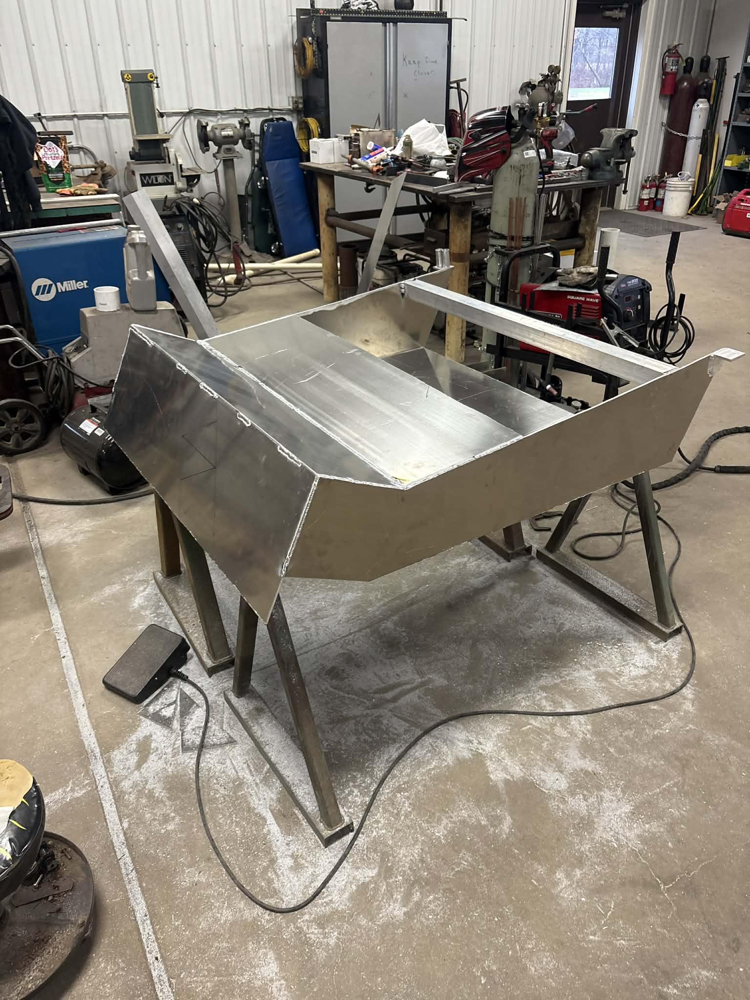
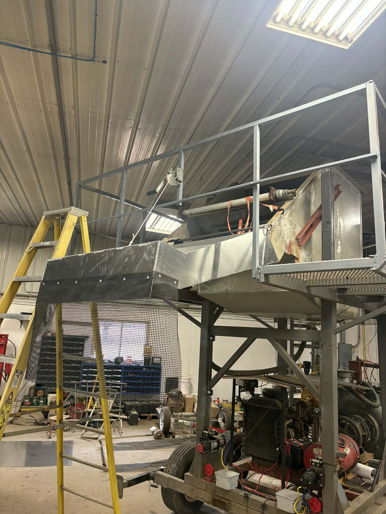
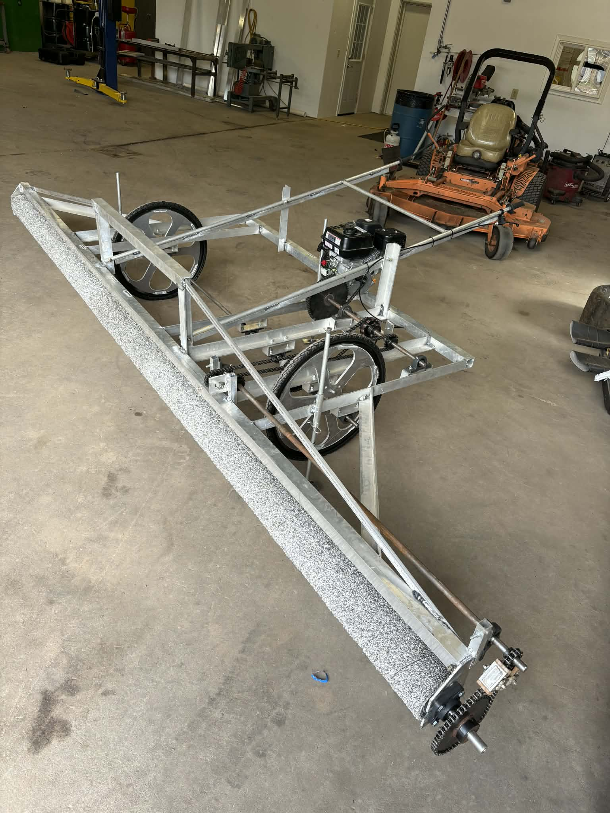

“Whatever you do, work heartily, as for the Lord and not for men.”
— Colossians 3:23On-site repairs for tractors, trailers, structures, and machinery—same day response, trusted craftsmanship.
High Attention to Detail • Fast Response Time • Flexible Scheduling
Real projects from real clients. Quality fabrication and welding that lasts.




KCM was started with a simple goal: to build something of my own while doing work I genuinely take pride in. Welding has always appealed to me because it's hands-on, detail-oriented, and produces something tangible at the end of the day. What began as a skill I developed through hard work and experience quickly turned into a passion for creating strong, reliable and well-crafted metalwork. Over time, I saw an opportunity to turn that passion into a business that serves people who value quality and durability
My Faith in God has played a big role in that journey. It gave me the courage to take a leap into business ownership and continues to guide how I treat my customers and approach my work. I believe in doing honest work, keeping my word, and serving others with integrity- values that shape every project that I take on. In both the challenges and the successes, I trust that there's a purpose behind the path I'm on.
The decision to start my own shop also came from wanting to do things the right way- no shortcuts, no compromises. I wanted the freedom to focus on craftsmanship, take the time to understand each customer's needs, and deliver results that last. Today my business is built on hard work, faith, and a commitment to excellence. I take pride in helping customers bring their ideas to life and solving problems with practical, dependable solutions- always striving to honor God through the quality of my work and the way I serve others.
Fast dispatch to your location to avoid costly downtime.
Using the best materials and techniques for durable results.
100% Customer Satisfaction track record
“Whatever you do, work heartily, as for the Lord and not for men.”
— Colossians 3:23“Well done is better than well said.”
— Benjamin FranklinWe solve your biggest metal repair challenges with on-site expertise and custom fabrication.
Emergency field welding for tractors, trailers, machinery, and structural components. We bring the weld rig to you.
Learn morePrecision components, brackets, hitches, and repairs built from heavy gauge steel with fast turnaround.
Learn moreGates, railings, supports, and home equipment repair with professional finishes and structural integrity.
Learn moreField-ready welding for tractors, trailers, and plant equipment. 24/7 dispatch, certified technicians, on-site quality control.
Custom steel components built to spec—fast and accurate. We handle measurement, cutting, bending, and fitting.
Home-grade fences, gates, and structural repair done right. Weather-resistant coatings and code-safe upgrades included.
“Chris got us back online during harvest in under 3 hours—couldn't ask for more. Very professional and efficient.”
— M.J., Farmer
“Their team fabricated a custom loader adapter with perfect fit. Saved us from waiting weeks on a replacement part.”
— J.T., Contractor
Send photos, get a service estimate in minutes, and get a tech on the road.
Contact for Emergency WeldingPhone: (715) 540-6436
Email: Casey120903@gmail.com
Service area: [Region; update post interview].
Need immediate service? Call now for emergency welding dispatch within hours.